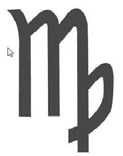
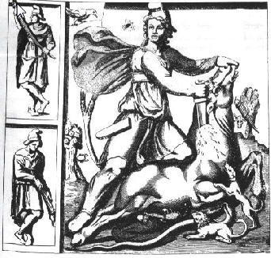

Virgo takımyıldızının Yunan mitolojisindeki hikâyesine göre Zeus’un insanların arasında yaşayan Astraea isimli bakire kızı, insanlardan gördüğü hainlik ve kötülüklerden kaçarak cennete yükselmiş ve Başak takımyıldızına dönüşmüştür. Bu hikâyede bakirelik haricinde Meryem’le bir benzerlik yoktur. Filmde bahsi geçen ve isimleri M harfiyle başlayan iki diğer “bakire” tanrıça Myrrha ve Maya’dır. Myrrha bir Yunan tanrıçası ve Adonis’in annesidir. Adonis’in doğumuyla ilgili iki değişik versiyon vardır. Birinci versiyonda Myrrha Afrodit’in tuzağına düşerek babası Theias ile cinsel ilişkiye girer. Theias olayı farkedince Myrrha’yı bıçakla kovalar. Diğer tanrılar da Myrrha’yı kurtarmak için onu bir ağaca dönüştürürler; Adonis de bu ağaçtan doğar. İkinci versiyonda Afrodit Myrrha’yı ağaca çevirir, Theias’ın elinde de bıçak yerine bir ok vardır ve oku ağaca atınca oluşan delikten Adonis doğar.
Maya, Buda olarak bilinen Prens Siddharta’nın annesidir. Ancak bu hikâyede bekaret sözkonusu değildir; zira Maya ve Buda’nın babası kral Suddhodana Siddharta doğduğu zaman 20 yıldır evlidir. Ancak Buda’nın doğumunu rüyasında görmesiyle ilgili bir hikâye vardır, belki buradan bir ilgi kurulabilir.
Bethlehem’in yani “ekmek evi”nin Başak burcunun simgesindeki buğday taneleriyle sembolize edilmesi ise İsa miti teorisini savunanlar haricinde ortaya konan bir bağlantı değildir. Başak burcundaki buğday sapı simgesi Sümerlerin tahıl tanrısı Ashnan’dan beri görülen bir motif. Ancak buradaki simgede bir problem var, zira İsa Bethlehem’de doğduğuna inanılan birisi, fakat eğer Başak burcu sembolünden yola çıkılarak bir tanrı yaratılmışsa İsa’nın kendisinin buğdayla ilişkilendirilmesi gerekirdi, doğduğu yerin değil. Başak burcunun aynı zamanda “ekmek evi” olduğuna dair filmin kaynağı Freke ve Gandy’nin kitabı The Jesus Mysteries31 ve Acharya S32; bu bilgiyi başka kaynaklardan doğrulayamıyoruz.
Son olarak M harfinin benzerliğinden bahsediliyor. Meryem, Maya ve Myrrha’nın isimlerinin baş harfinin başak burcunun simgesi olan M harfine benzediği iddia ediliyor. Ancak İbranicedeki M harfi Yunanca ve Latince’deki M harfine benzemez. İlk İncil’in İbranice harflerle Aramaik dilinde yazıldığını göz önüne alırsak, M harfinin başak burcunun sembolüne benzeyen bir karakter olmadığını görürüz. Aynı şekilde Yeni Ahit’in ana kitabı Matta’nın da İbranice yazıldığını biliyoruz. Bu sebeple M harfi benzerliği pek de geçerli bir kanıt sayılamaz.
Ayrıca 25 Aralık’ta yani kış gündönümünde bir başka ilginç olay meydana gelir. Yaz gündönümünden kış gündönümüne kadar, günler kısalır ve soğur. Kuzey yarımküreden bakıldığında güneş güneye doğru hareket eder ve gittikçe küçülerek silikleşir. Günlerin kısalması ve kış gündönümüne doğru hasat zamanının gelmesi, antik medeniyetlerde ölümü temsil ediyordu. Bu, güneşin ölümüydü.
22 Aralık’ta güneşin yok olduğu en belirgin şekilde görülür. Güneş altı ay boyunca güneye doğru hareket eder ve o gün, ufuktaki en düşük noktasına ulaşır. İşte burada ilginç bir olay olur: Güneşin güneye doğru hareketi üç gün boyunca durur; bu üç günlük beklemeden sonra güneş, haç şeklindeki Güney takımyıldızının üzerinde yeniden yükselmeye başlar. 25 Aralık’ta gerçekleşen bu olaydan sonra güneş, bu sefer kuzeye doğru bir derece hareket eder; günler uzamaya ve ısınmaya başlar, bahar gelir. İşte bu yüzden, “Güneş haç üzerinde öldü, üç gün ölü kaldı ve tekrar dirildi” denir. Bu yüzden İsa ve diğer sayısız güneş tanrısı aynı haç, üç günlük ölüm ve yeniden diriliş temalarını paylaşır.
Güneşin hareketlerinin Kuzey yarımküredeki görünümünü temel alırsak söylenenler doğru. Ancak İsa’nın ne doğumgününün ne de ölümünün kış aylarında olmaması bu iddiayı biraz zora sokuyor. İsa’nın çarmıha gerilmesi baharda kutlanan Pesah bayramından hemen sonraya denk geliyor. İncil’deki son akşam yemeği hikâyesinde yenen yemek Pesah yemeğidir ve genel kanı, modern takvime göre ertesi gün, yani 23 Nisan 33 tarihinde, İsa’nın çarmıha gerildiğidir. Güneşin aralık ayındaki alçalması ve nisanda gerçekleşen İsa’nın ölümü arasında bir bağlantı kurmak zor.
Haç şeklindeki takımyıldızı “Southern Crux” (Güney Haçı) ismiyle bilinen bir takımyıldızıdır. Burada bariz bir astronomik hata var; o da Southern Crux takım yıldızının Kuzey yarımkürede görülebilen bir takım yıldızı olmaması. Ekvatorun güneyi, İncil yazıldıktan çok sonra 15. yüzyılda keşfedilen bir yer ve bunun doğal sonucu olarak İncilleri kaleme alan yazarların henüz keşfedilmemiş bir takımyıldızından ilham alıp bir çarmıha gerilme hikâyesi yazmış olmaları çok düşük bir ihtimal.
Zeitgeist, İsa ve diğer güneş tanrıların bu çarmıhta ölüm, üç gün sonra dirilme hikâyesini paylaştıklarını söylese de çarmıhta gerilip öldürülmüş ve üç gün sonra dirilmiş başka bir mitolojik kahramana dair kayda değer bir kaynak yok. Filmin kaynak olarak kullandığı kitap 1882 yılında Thomas Doane tarafından yazılmış olan Bible Myths and and Their Parallels in Other Religions.
Bu aslında güneşin, Kuzey yarımküreye doğru hareket yönünü değiştirmeden ve baharı getirmeden önceki hareket sürecidir. Buna rağmen güneşin yeniden dirilişi, bahar ekinoksuna kadar kutlanmazdı. Çünkü güneş, günün uzadığı ve baharın belirtilerinin başladığı bahar ekinoksunda, yani “Paskalya” zamanında belirgin olarak karanlığın kötülüğünü alt ediyordu.
Burada sembolik bir anlatım kullanılmış. Güneş bahar gündönümüne kadar baskın değildir. Daha doğrusu günler gecelerden kısadır. Burada benzerlik bulunan tanrı daha önce bahsettiğimiz Attis’tir. Attis, bitkilerin tanrısıydı ve bitkilerin kışın ölüp baharda tekrar canlanmasından sorumluydu. Her kış ölür, her baharda tekrar doğardı. Her bahar ayında tekrar doğuşu kutlanırdı. Bugün Hristiyanlığın bazı mezheplerince kutlanan Paskalya bayramı bu gelenekten kaynağını almaktadır.
Şimdi, muhtemelen İsa’yla ilgili en belirgin astrolojik sembole, yani 12 sadık havarisine bakalım. Bunlar aslında Zodyak çaprazında tasvir edilen 12 burçtur ve güneşi temsil eden İsa onları ziyaret eder. Muhtemelen İsa’yla ilgili en bariz astrolojik sembolizm örneği 12 havaridir. Zodyak’ta 12 takım yıldızı var ve İsa’yla sembolize edilen Güneş’le birlikte “yolculuk” ediyorlar. Aslına bakarsanız , 12 rakamı İncil boyunca tekrarlanan bir rakam. Bu yazı başka herhangi bir şeyle ilgili olduğundan çok astrolojiyle ilgili.
12 rakamı Eski Ahit ve Yeni Ahit’te birçok başka yerde de geçen bir takam. 12 İsrail kabilesi, İsrail’in 12 yargıcı, Yusuf peygamberin 12 kardeşi, İsrail’in 12 kralı, 12 prensi ve bir kaç yerde daha bu 12 rakamı karşımıza çıkar. Bu 12 rakamının Zodyak’taki burçlardan alınmadığını ispat etmek imkânsız. Ancak bu üstteki ifadede göze çarpan şey İsa’nın 12 burcu temsil eden 12 havariyi ziyaret etmesine dair. Gerçekten de Zodyak’ta güneş, gökyüzündeki bu 12 burçtan sırasıyla geçer. Fakat İsa hikâyesinde havariler İsa’nın ziyaret ettiği karakterler değil İsa’nın peşinden giden kişiler. Buradaki benzerlik birçok başka yerde de karşımıza çıkan 12 rakamıyla ilgili sadece. Temelde İsa ve güneş arasında bu açıdan bir benzerlik yok.
Güneşin yaşamını tasvir eden, Zodyak çaprazına geri dönersek, onun sadece güneşin hareketlerinin sanatsal bir ifadesi olmadığını söyleyebiliriz. Bu aslında ilahi bir Pagan sembolüdür. Bu bir Hristiyanlık sembolü değildir. Bu, paganların Zodyak çaprazı uyarlamasıdır. Bu yüzden İsa, eski betimlemelerde hep kafasında bir haçla gösterilir. Çünkü İsa güneştir, “Tanrı’nın güneşi”dir, “Dünyanın ışığı”dır, “Yükselen kurtarıcı”dır, ve bu yüzden, aslında her sabah yaptığı gibi “tekrar gelecek”tir. Karanlığın düşmanı olan Tanrı’nın kudretiyle, her sabah “yeniden doğar”, “bulutların üzerinden yükselir”, ve “acında parlayan gün ışıklarıyla cennetten iner.
Buradaki ifadeler doğrudan İncil’den alınma. Haç sembolü ya da artı sembolü insanlık tarihi boyunca Mısırlılardan Hintlilere birçok yerde görülen bir sembol. Hıristiyanlığa girişi de 2. yüzyıldan sonra. İlk 200 yıl boyunca Hıristiyanların sembolü birazdan değineceğimiz balık sembolüydü. Özetle haç sembolü Hıristiyanlıktan kaynağını alan bir sembol değildir.
Ancak İsa’nın resimlerinde başında ışık huzmesi ve ışınlarla gösterilmesi M. S. 400’lü yıllarda başlayan bir uygulama. Daha öncesinde bu, Perslerden Romalılara geçen ve bazı Roma ile Yunan tanrılarının resimlerinde görülen bir desendir. İlk Hıristiyanlar, kendi dinlerini ve inançlarını hali hazırda var olan pagan dinlerden ayrı tutabilmek adına bu ışık hüzmesi, hare motifini kullanmadılar. 400’lü yıllarda kullanmaya başladıkları zamansa sadece İsa’da değil diğer bütün kutsal kişiliklerde de kullanmaya başladılar.
İncil’de yer alan sayısız astrolojik-astronomik benzetmelerden belki de en önemlisi Çağ’lar ile ilgili olan kısımdır. Yine kutsal kitapta “Çağ” kelimesi birçok yerde geçmektedir. “Çağ” kavramını tam olarak anlayabilmek için, öncelikle gece gündüz eşitliğinin, yani ekinoksun, gerilemesi olayını anlamalıyız. Antik Mısırlılar ve onlardan önceki birçok medeniyet fark ettiler ki, yaklaşık olarak her 2150 yılda bir bahar gündönümünde şafak, Zodyak’ın bir başka sembolüne denk geliyordu. Bu olay, dünyanın kendi ekseninde açısal olarak dönerken yalpalanmasıyla ilgilidir. Bu olaya gündönümünün gerilemesi denir, çünkü normal bir yıllık döngünün aksine bu olayda burç geriye gider. Bu gerilemenin 12 burcun tamamında gerçekleşmesi için gereken süre ise, tam olarak 25.765 yıldır. Bu süre aynı zaman da “Büyük Yıl” olarak adlandırılıyordu ve antik toplumlar buna çok dikkat ediyordu. Bu yüzden her 2150 yıllık süreci bir “Çağ” olarak adlandırdılar. M.Ö. 4300 yılından M.Ö. 2150 yılına kadar Taurus, yani “Boğa Çağı” yaşandı. M.Ö. 2150 yılından M .S. 1 yılına kadar Aries, yani “Koç Çağı” yaşandı. Ve şu an da içinde bulunduğumuz M.S. 1 yılından M. S. 2150 yılına kadar olan süreçte de, “Balık Çağı” yaşanacak. 2150 yılından sonra ise, dünya yeni bir çağa girecek: “Kova Çağı”na.
Antik Mısırlılar ve onlardan önceki medeniyetlerin “Devinim” adı verilen hareketi farkettiğine ve bildiğine dair iddianın kaynağı Acharya S. Onun kaynağıysa Hamlet’s Mill isimli, 1960’larda yayımlanan ve yanlış yöntem, geçerliliğini yitirmiş bilgi, tesadüfler ve akıl yürütmelere fazlaca dayanmak gibi şeylerden dolayı çokça eleştirilmiş bir başka kitap. Devinim hareketini ortaya koyduğu bilinen ilk insan M. Ö. 200’lerde Rodos’ta yaşayan Hipparchus isimli bir astronom. Onun yazdığı eser mevcut değil; ancak M.S. 2. yüzyılda yaşayan İskenderiyeli Batlamyus’un Hipparchus’un devinimi farkettiğinden bahsettiği eseri mevcut. Kısaca İncil’in yazarlarının devinimden haberdar olarak ve devinimi astrolojik geleneklere dahil ederek İsa hikâyesini oluşturmuş olma ihtimalleri çok düşük. Devinim’in astrolojide yer bulması için gereken zaman ve bilgi akışı mevcut değil.
İncil, sembolik olarak üç çağın geçişinden ve geçilecek olan dördüncü. bir çağdan bahseder. Eski Ahit’e göre Musa, Sina Dağı’ndan elinde On Emir ile birlikte geldiğinde, insanlarının altından bir buzağı heykeline taptıklarını görür ve çok üzülür. Taş tabletleri parçala ve insanlarına, bu utançtan arınmak için birbirlerini öldürmeleri gerektiğini söyler. Birçok ilahiyatçı bu öfkeyi, İsrailoğulları’nın yanlış tanrıya tapmalarına bağlamıştır. Aslında o put altın bir boğaydı, Taurus Boğası’ydı ve Musa halkına yeni çağın, yani “Koç Çağı”nın geldiğini haber veriyordu. Bu yüzden Yahudiler, bugün bile hala boynuz borusu çalarlar. Musa yeni çağ olan Koç Çağı’nı temsil ediyordu ve bu yüzden herkes eski çağdan vazgeçmeliydi.
M.Ö. 2. yüzyılda keşfedilen bir şeyin M.Ö. 10. yüzyılda yazılan Eski Ahit’e girmiş olması imkansız gibi görünüyor. Musa ve boynuz arasındaki ilişki Tevrat’ta Musa’nın dağa çıkıp On Emir’i alması sırasında yüzünün yanmasını anlatan pasajda geçen “karan” kelimesinin hem ışın hem de boynuz olarak tercüme edilebilmesine dayanıyor. Buna göre eğer kelimenin anlamını “boynuz” olarak alırsak, Musa’nın dağdan indikten sonra boynuzları çıktığını düşünebiliriz. Birçok resim ve heykelde Musa’nın boynuzlu olarak resmedilmesinin sebebi de bu pasajdır. O tarihte bilinmeyen bir devinim-astrolojik çağ motifinin doğrudan Tevrat’ta bulunan bir ifadeden daha fazla etkisi olduğunu düşünmekçok zor. Onun yerine Yahudilerin küçükbaş hayvan yetiştiren bir halk olması, koç boynuzunun bolca bulunan ve bir borazana dönüştürülebilen bir şey olması sebebiyle geleneksel bir motif haline gelmesi ihtimali daha akla yatkın geliyor. Bir diğer nokta, eğer Musa yeni çağın gelişini ve eski çağın bitişini sembolize ediyorsa, bir 650 sene kadar geç kalmış demek oluyor. Çünkü Musa’nın, eğer gerçekten var olduysa, M. Ö. 1500’lü yıllarda yaşamış olması gerekiyor. Bu da M.Ö. 2150 yılından bir 650 yıl sonradır.
Antik tanrılardan Mithra gibi, başka figürler de bu geçişi yaşamış ve aynı tema içerisinde bir boğayı öldürmüştür.
Mithra’nın boğayı öldürürken yapılmış heykelleri her Mithra tapınağında bulunurdu. Bu temaya “Tauroctony” ismi verilirdi ve Bergama’daki heykel okulunda M.Ö. 200’lü yıllarda yapılmış ve Mithra’yı boğayı öldürürken gösteren heykeller bulunmakta. Ancak daha önce de söylediğimiz gibi, devimin hareketi Hipparchus’tan Bergama’daki heykel ustalarına geçen bir bilgi olsa bile, bu bilginin astrolojik bir geleneğe dönüşmesi için yeterli zaman yok.